LLM & RAG systems
Retrieval-augmented generation, prompt engineering and grounded answers with vector search.
AI/ML Engineer @ Jeena & Company
AI Engineer in Mumbai specialising in LLM-powered document intelligence, RAG pipelines and agentic workflows — turning messy documents and business data into reliable, structured systems from POC to production.
About
I'm Swapnil Sawant, an AI Engineer based in Mumbai. I design systems that turn unstructured documents — invoices, airway bills, scanned PDFs — into clean, validated data that teams can actually use.
My path started in mechanical engineering and shipbuilding, moved through data science, and is now focused on production LLM systems at Jeena & Company. That background shapes how I build: I care about reliability, fallbacks, schema validation, logging and cost — not just demos that work once.
Today I work across the stack: document intelligence with OCR and vision models, retrieval-augmented generation, multi-agent workflows with LangGraph, and FastAPI services that put all of it in front of real users. I'm always open to conversations about AI engineering roles and collaborations.
Currently building document intelligence and agentic AI at Jeena & Company, Mumbai.
Retrieval-augmented generation, prompt engineering and grounded answers with vector search.
OCR plus LLM extraction pipelines for native PDFs, scans and mixed-format files.
Multi-agent LangGraph systems with routing, guardrails, validation and self-correction.
FastAPI services, ETL, SQL Server, monitoring, fallbacks and cost optimisation.
Selected work
Two production systems and two agentic builds from my work in logistics document automation, followed by public machine learning projects on GitHub.
End-to-end Python ETL system that extracts, validates and loads structured data from logistics documents into SQL Server — covering native PDFs, scanned images and mixed formats.
80%+ manual data entry automated
Internal production system · Jeena & Company
LangGraph workflow of specialised agents — relevance check, schema-aware SQL generation, validation, evaluation and a self-correcting feedback loop — so non-technical teams can query business data in plain English.
Plain-English access to business data
Internal production system · Jeena & Company
FastAPI application for air and sea export finance that automates the complete reconciliation cycle between operational and PD account data, replacing a manual spreadsheet workflow.
70–80% less manual reconciliation effort
Internal production system · Jeena & Company
BrowserUse agents that autonomously log into external portals, download operational and PD account reports, and feed downstream processing without human intervention.
Zero-touch report retrieval
Internal production system · Jeena & Company
Showing 9 of 9 public projects
Deep learning and NLP pipeline that classifies tweet sentiment — text cleaning, tokenisation, an LSTM model and evaluation.
Relational database designed in SQL to track inventory, analyse sales and calculate revenue for a retail store.
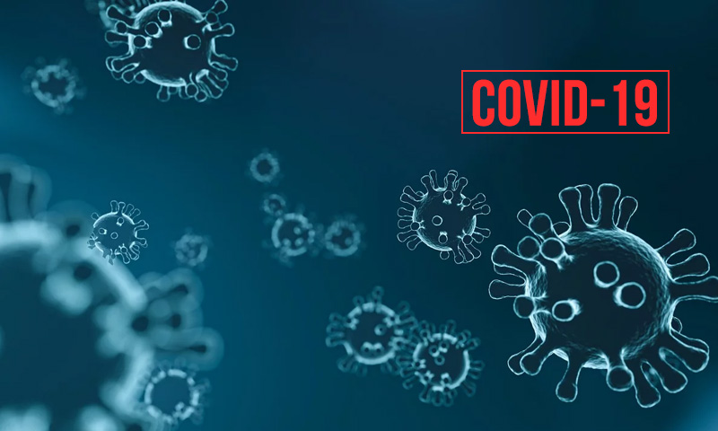
Power BIInteractive Power BI report tracking the progression and global impact of the pandemic over time.
Five-year time series analysis of India's top four banks using Pandas, Matplotlib and Plotly to explore trends and seasonality.
Supervised classification models to predict loan eligibility, with preprocessing, model comparison and tuning — 87% accuracy.
Regression model predicting medical insurance premiums, with exploratory analysis and evaluation using MAE and RMSE.
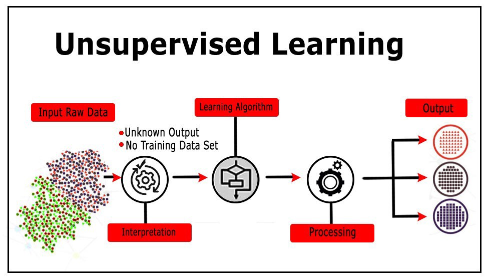
Machine LearningK-means and hierarchical clustering to group countries for fund allocation, with dimensionality reduction and visual analysis.
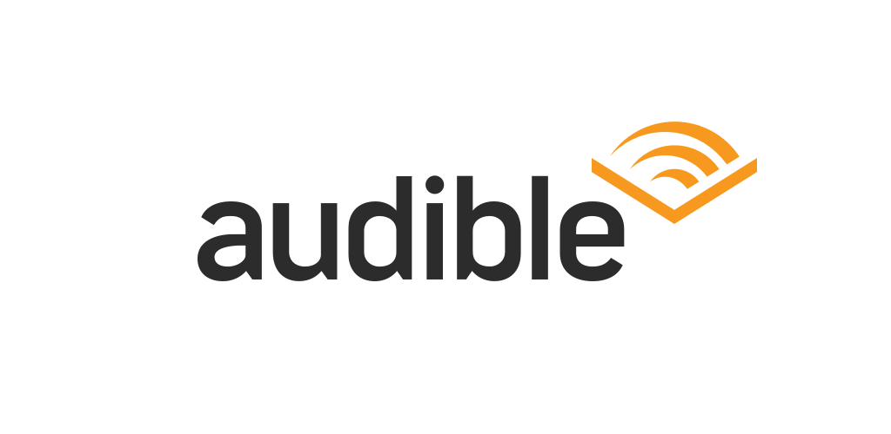
AutomationSelenium automation that drives Chrome through ChromeDriver to collect Audible book data at scale.
Exploratory data analysis across multiple datasets using Pandas, NumPy and Matplotlib to surface trends and insights.
Toolkit
From document ingestion and LLM orchestration to APIs, validation and the data layer underneath — the tools I use to ship working systems.
Experience
Production AI engineering in logistics, earlier data science internships, and a foundation in mechanical engineering and shipbuilding.
Mar 2024 — Present Current
Jeena & Company · Mumbai, India
Apr 2023 — Jun 2023
Oasis Infobyte & The Sparks Foundation · Remote
Jul 2021 — Jul 2022
Millennium Aero Dynamics · Mumbai, India
Mar 2019 — Mar 2020
Mazagon Dock Ltd · Mumbai, India
Itvedant Education Pvt. Ltd.
Sep 2022 — Sep 2023University of Mumbai
Jul 2014 — Jul 2018Credentials
Formal training in generative AI, RAG, machine learning and analytics — plus internship credentials from Oasis Infobyte and The Sparks Foundation.
Vanderbilt University
CredentialDeepLearning.AI
Credential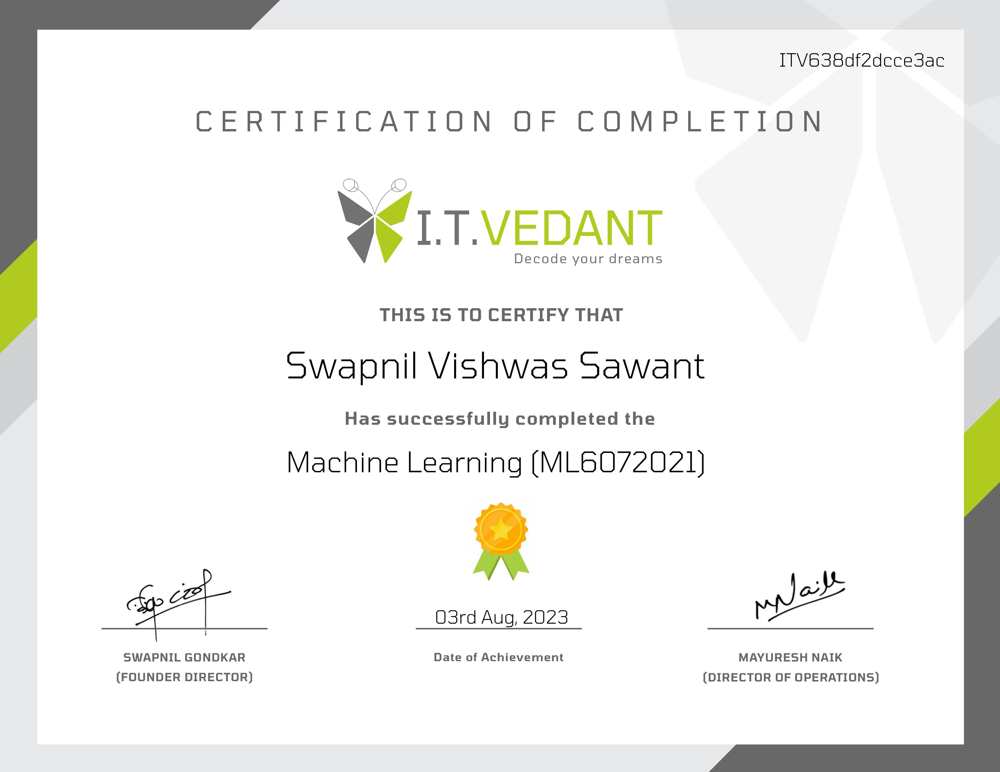
Itvedant
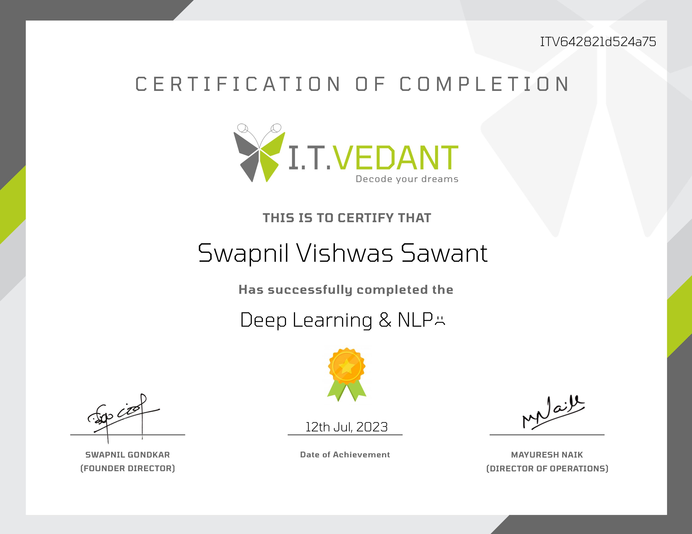
Itvedant
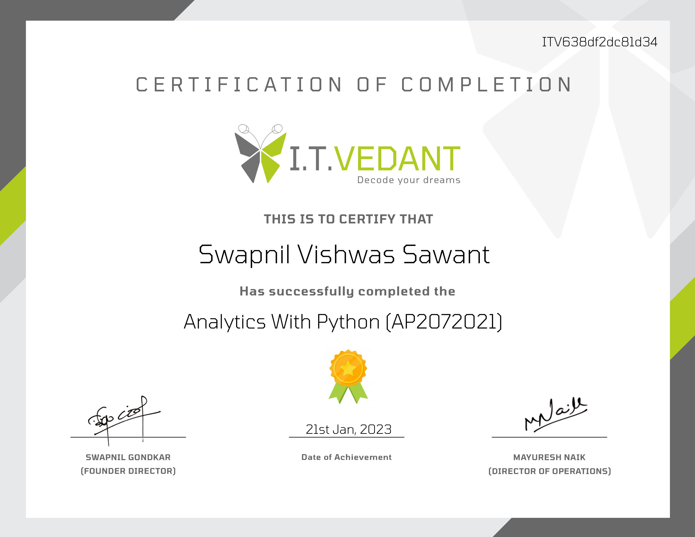
Itvedant
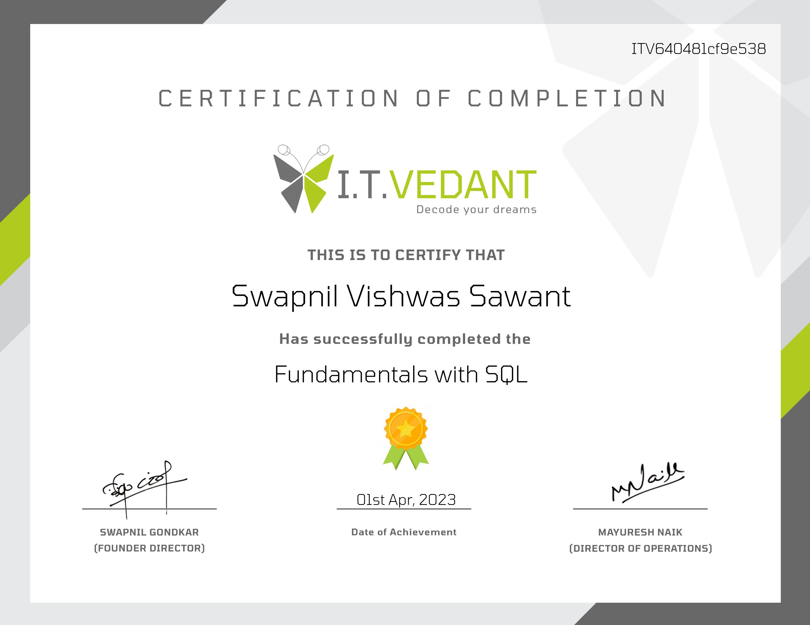
Itvedant
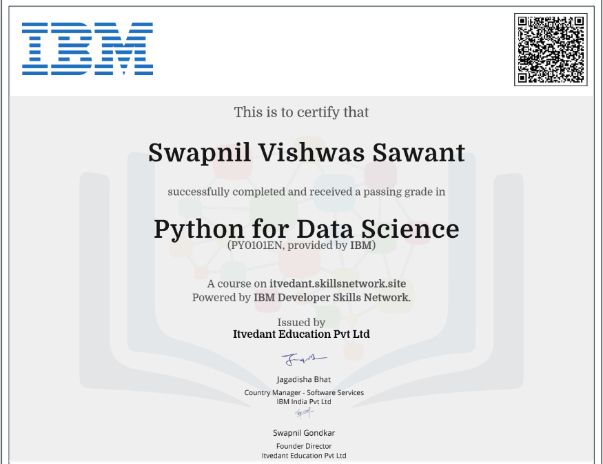
Itvedant
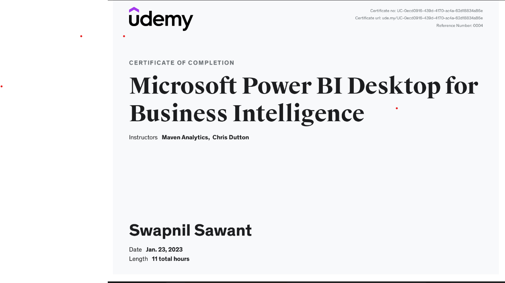
Itvedant
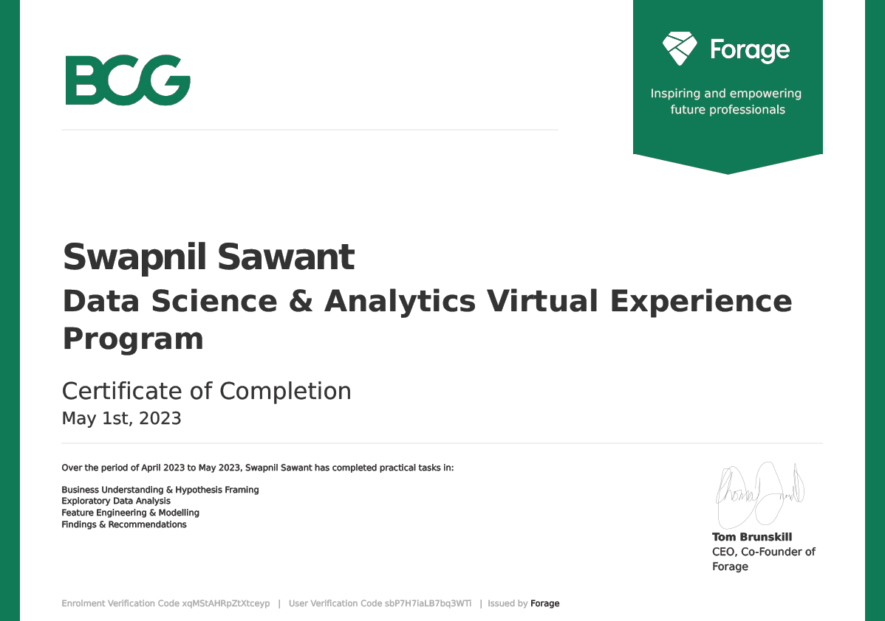
Boston Consulting Group
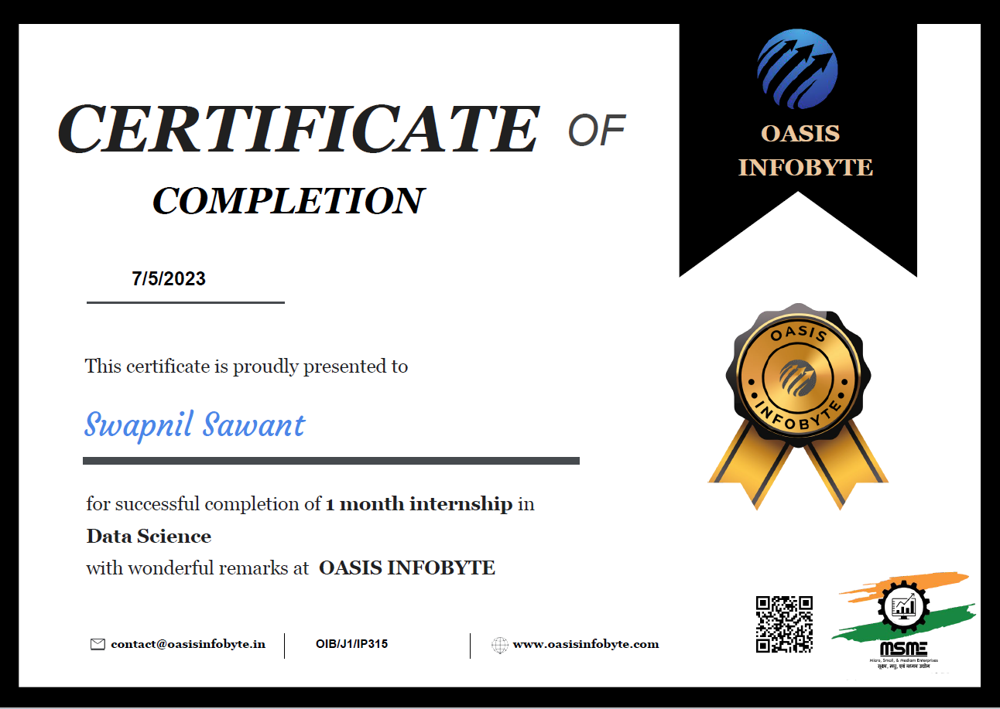
Oasis Infobyte

The Sparks Foundation
Contact
I'm open to AI Engineer roles and collaborations on LLM, RAG and document intelligence systems. The fastest way to reach me is email.